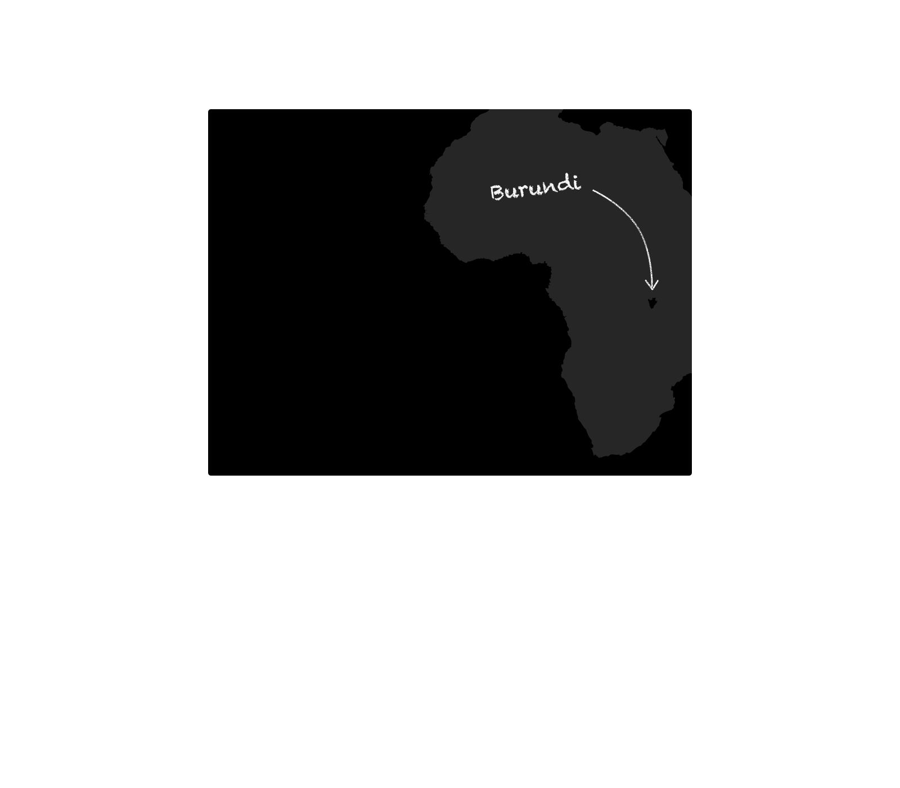
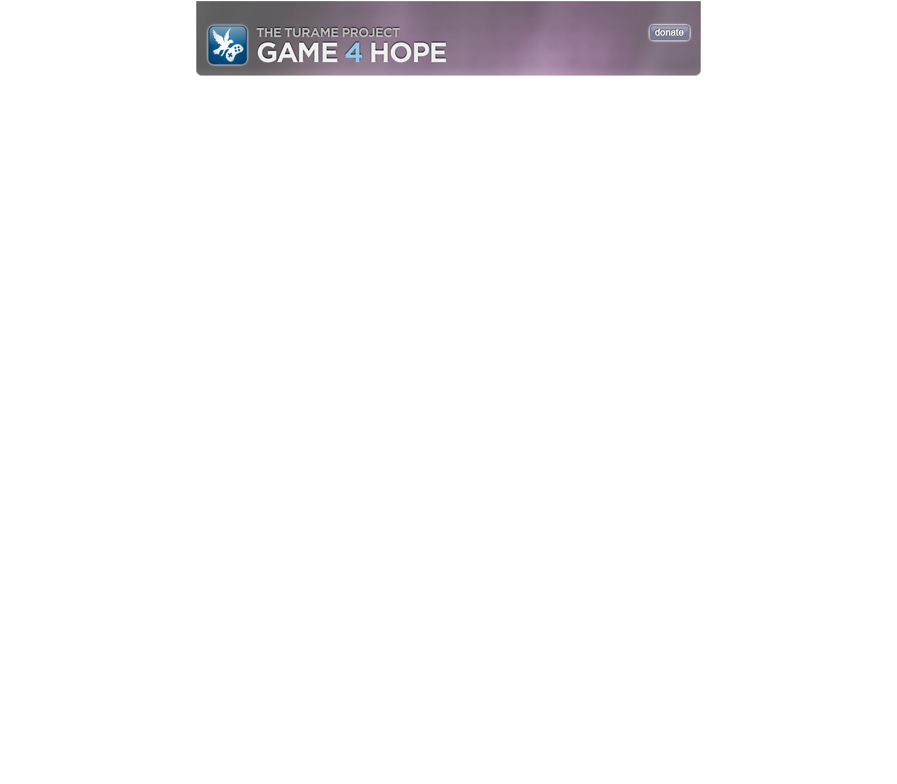

Burundi might look like a small speck on a map, but
because it's so densely populated it's home to many
people. Ravaged by civil war, massacre, and genocide,
the people of Burundi have had it rough. Two thirds of the
population live in poverty, existing on less than $1 a day.
Making a difference can be difficult, and sometimes helping people half-way around the world
seems impossible. Fortunately, there is an organization called Turame that was founded to
help fight poverty in Burundi. Turame raises money to finance micro-loans for impoverished
families, widows, and refugees. Rather than give the money away, Turame works with loan
recipients to form lasting investments, to build small businesses, and to teach self-sufficiency.
To spread awareness and raise funds, we (a West Michigan youth group) have decided to hold a
24-hour gaming marathon. Friends, family, and community members are welcome to come play
games in exchange for small donations. We're going to try to stream out a live video, so anyone
can join us in spirit -- feel free to donate online as well! All funds raised will be donated to Turame.